Plot a windrose showing the wind speed and direction using ggplot2.
Usage
ggwindrose(
speed,
direction,
n_directions = 8,
n_speeds = 5,
speed_cuts = NA,
col_pal = "GnBu",
legend_title = "Wind speed (m/s)",
calm_wind = 0,
n_col = 1,
facet = NULL,
plot_title = "",
...
)Arguments
- speed
Numeric vector of wind speeds.
- direction
Numeric vector of wind directions.
- n_directions
Numeric value as the number of direction bins to plot (petals on the rose). The number of directions defaults to 8.
- n_speeds
Numeric value as the number of equally spaced wind speed bins to plot. This is used if
speed_cutsisNA(default 5).- speed_cuts
Numeric vector containing the cut points for the wind speed intervals, or
NA(default).- col_pal
Character string indicating the name of the
hcl.pals()color palette to be used for plotting.- legend_title
Character string to be used for the legend title.
- calm_wind
Numeric value as the upper limit for wind speed that is considered calm (default 0).
- n_col
The number of columns of plots (default 1).
- facet
Character or factor vector of the facets used to plot the various windroses.
- plot_title
Character string to be used for the plot title.
- ...
further arguments (ignored).
Value
A ggplot2 object
API Key
You need to set your API Key globally using aemet_api_key().
See also
ggplot2::theme() for more possible arguments to pass to
ggwindrose.
Other aemet_plots:
climatestripes_station(),
climatogram_normal(),
climatogram_period(),
ggclimat_walter_lieth(),
ggstripes(),
windrose_days(),
windrose_period()
Other wind:
climaemet_9434_wind,
windrose_days(),
windrose_period()
Examples
library(ggplot2)
speed <- climaemet::climaemet_9434_wind$velmedia
direction <- climaemet::climaemet_9434_wind$dir
rose <- ggwindrose(
speed = speed,
direction = direction,
speed_cuts = seq(0, 16, 4),
legend_title = "Wind speed (m/s)",
calm_wind = 0,
n_col = 1,
plot_title = "Zaragoza Airport"
)
rose + labs(
subtitle = "2000-2020",
caption = "Source: AEMET"
)
